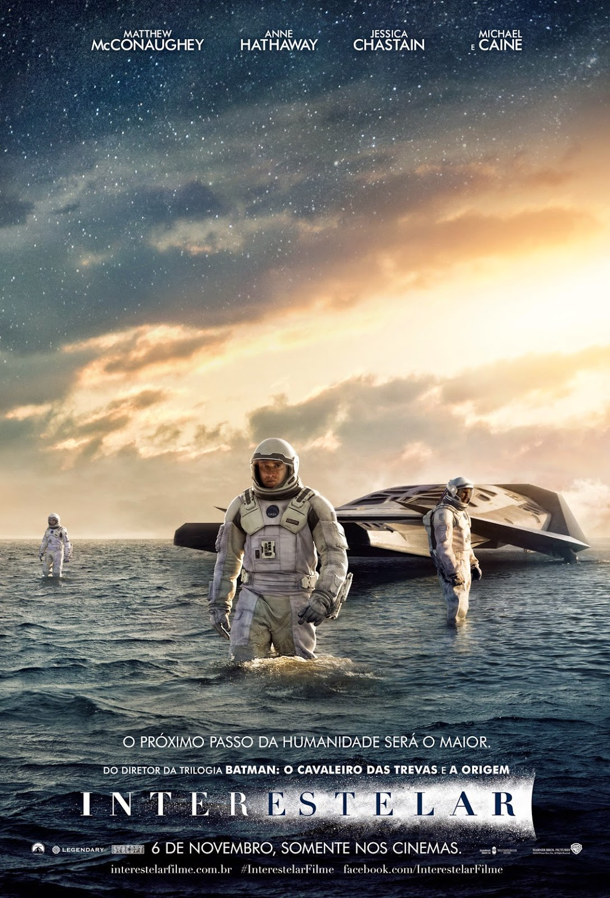
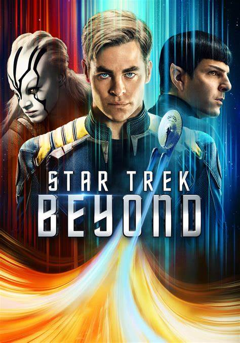
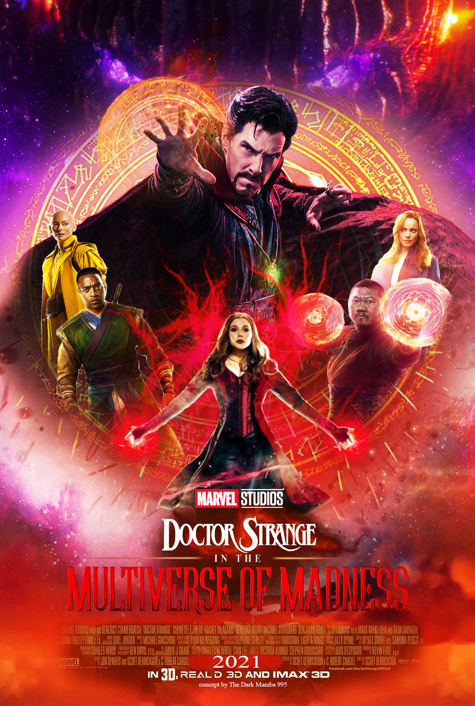

Movies
-
Interstellar
"Interstellar" is a science fiction epic directed by Christopher Nolan,
following the journey of a group of astronauts in search of a new home
for humanity in a universe devastated by a scarcity of natural resources. -
Star Trek Beyond
"Star Trek Beyond" is a science fiction film directed by Justin Lin,
which follows the crew of the USS Enterprise as they explore uncharted
and face off against a new enemy. The film features stunning visuals,
exciting action sequences, and a strong ensemble cast led by Chris Pine
as Captain Kirk. -
Doctor Strange in the Multverse of Madness
"Doctor Strange in the Multiverse of Madness" is a superhero film directed
by Sam Raimi, which follows the Sorcerer Supreme, played by Benedict
Cumberbatch,as he navigates through multiple dimensions and confronts dark
forces threatening the fabric of reality. The film promises to be a mind-
bending, visually stunning adventure that will further expand the Marvel
Cinematic Universe.